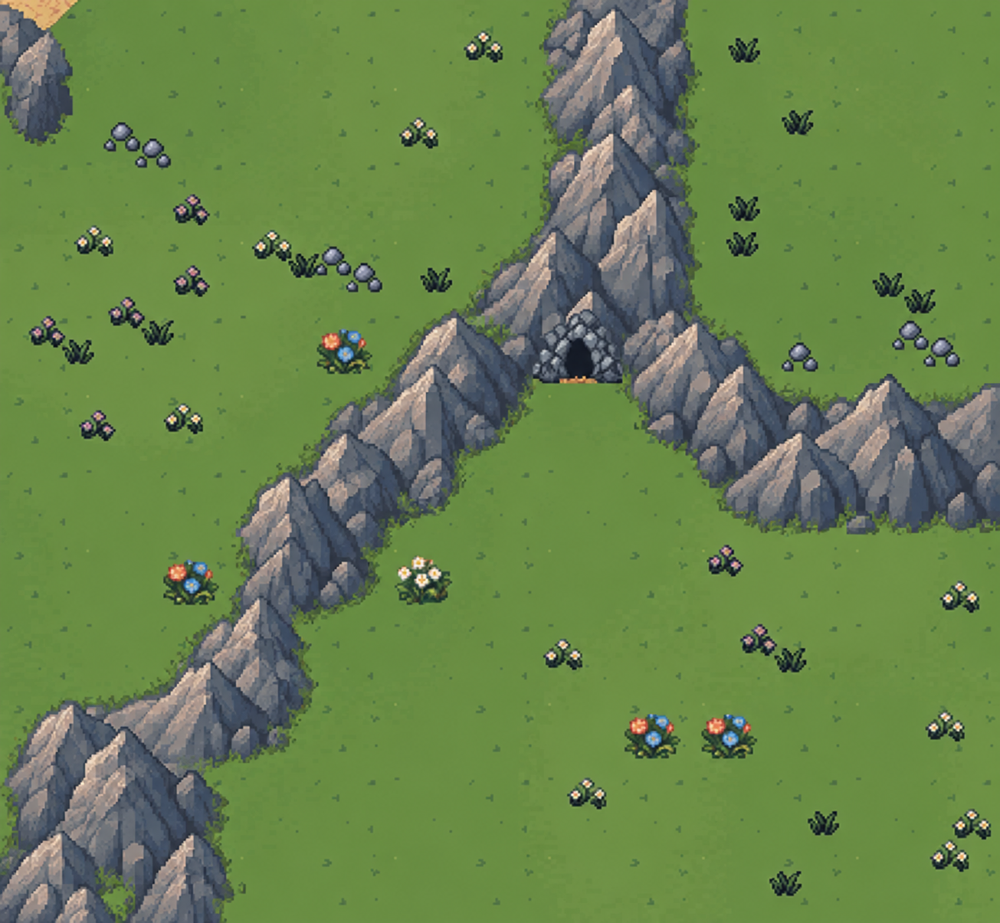

Overlapping peaks & natural slopes
A small art-direction study using surface F3 (map 18). The proposal gives each mountain a summit, descending ridges, sheltered clefts and grass at its base.
Current game capture Proposed art direction · generated concept
Proposed art direction · generated concept
This is a visual mockup, not an in-game screenshot of an implemented change. It illustrates the desired forms and shading. Generated details and silhouettes need to be translated to the native pixel grid and checked against the real blocked terrain, cave approaches and region joins before use in the game.
Created with the built-in image generation tool. Generation prompt. Existing renderer, map data and saves unchanged by this concept pass.